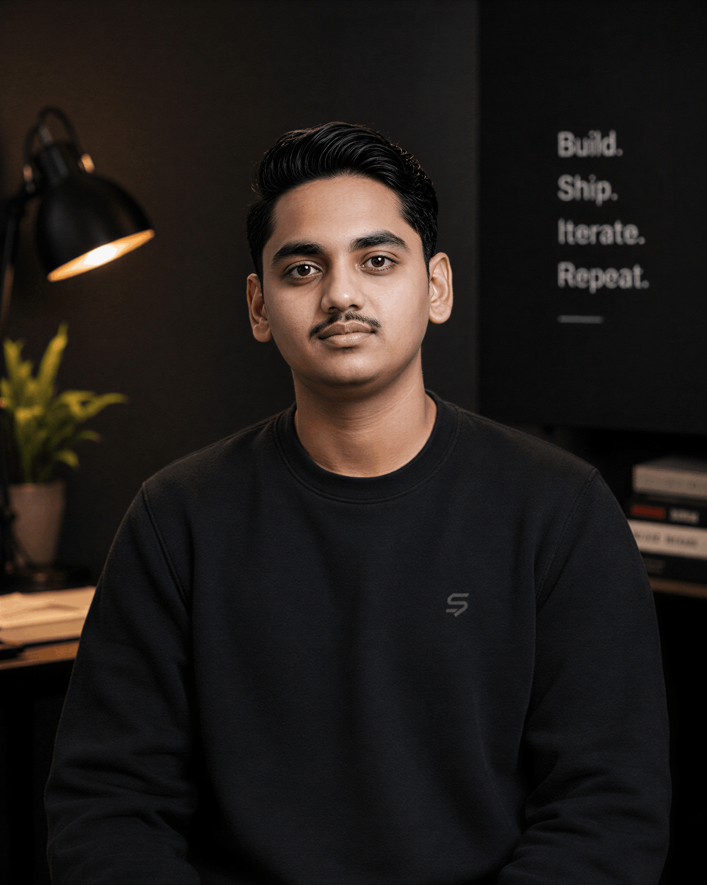

Machine Learning
Learning how data, models, optimization and evaluation turn patterns into useful predictions and systems.
COMPUTER SCIENCE · AI · SOFTWARE · PRODUCT
I love difficult problems so I can find beautiful solutions. I study computer science, build software, explore AI, and keep following questions that are too interesting to leave alone.

ABOUT ME
A little context before we get technical.
I’m A Krishna Saathwik, an integrated B.Tech + M.Tech Computer Science & Engineering student at Mahindra University. I enjoy moving between theory and implementation: learning the idea, understanding the machinery behind it, and then building something with it.
My interests sit across machine learning, natural language processing, quantum physics, database systems and object-oriented programming. Alongside the academic side, I build websites, applications, APIs and AI products across the full stack.
I’m at my best when there is a blank page, a hard question and enough room to figure things out properly. I care about the details, but I care even more about whether the final thing is actually useful.
EXPERTISE
The areas I keep coming back to, from theory-heavy questions to things I can build.
Learning how data, models, optimization and evaluation turn patterns into useful predictions and systems.
Exploring how machines work with language, text and information, and how those ideas become real applications.
A long-running interest in the mathematics, intuition and strange fundamentals behind quantum systems.
Working with structured information, clean abstractions, maintainable code and the systems underneath applications.
Building the whole path from interface to logic, API and database so a feature can become a complete product.
Starting with the problem, reducing the unnecessary, and making software that people can actually understand and use.
MY TOOLBOX
The tools I use most often when an idea needs to become a working thing.
EDUCATION
The formal path behind the experiments.
INTEGRATED PROGRAM
Mahindra University
An integrated computer science journey covering programming, algorithms, databases, software engineering, AI, mathematics and the broader foundations needed to build modern systems.
SELECTED WORK
A few things that have moved from idea to something real.
SAANORA TECHNOLOGIES · AI COMPANY
Saanora is the AI company I’m building around models, intelligent products and the systems that make those ideas useful. The work sits between model research, product building and the small details that turn an experiment into something people can actually use.
We launched Saanora’s first open model: a 9B-parameter model built to answer in interfaces, deciding when a question deserves something more than a paragraph and generating the interface itself.
SYNOPPY · WEB DATA FOR AI AGENTS
Synoppy is a web-data layer for AI agents: one API that gives products and agents clean, structured access to the live web. Instead of stitching together separate tools for scraping, crawling, search and extraction, Synoppy brings the core pieces together behind one consistent interface.
The platform currently covers reading, crawling, mapping, search, extraction, images, screenshots, enrichment and classification, with agent actions on the roadmap.
Explore Synoppy ↗New products, prototypes and ideas will live here as they become real.
OUTSIDE THE CHECKLIST
The things that keep me curious beyond a syllabus.
Quantum physics. New AI models. Product ideas that start as a scribble. Interfaces that feel just right. Problems that look impossible until you stare at them long enough.
A LINE I TRY TO LIVE BY
07 / CONTACT
Have a project, research idea, startup, collaboration, internship opportunity or just a fascinating problem? I’d love to hear about it.
krishnasaathwik2007@gmail.com ↗